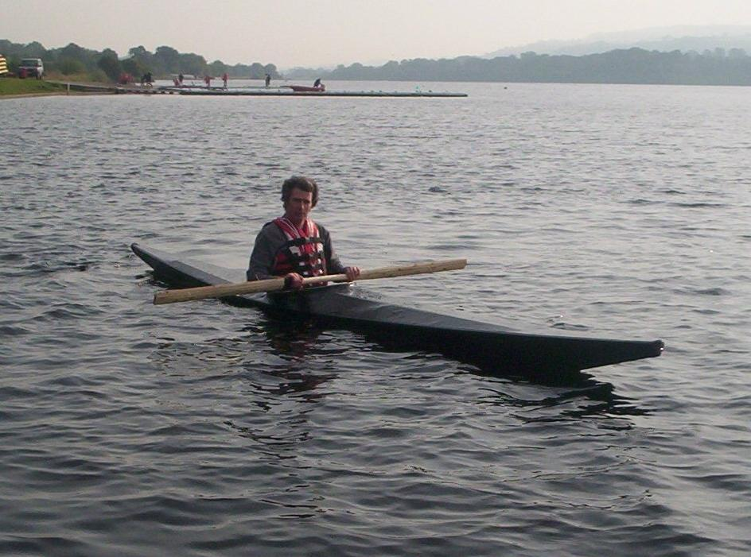

| Sea Ranger by David Scobie (UK) | Menu Previous Page Next Page |
|

David, from Scotland, built his non folding Sea Ranger using pine stringers with 12mm plywood ribs, stem plates, and coaming. The skin is made from a polyester tarpaulin coated with gloss paint. He reports that his Sea Ranger..." handles brilliantly and tracks well. It is much more stable than I had expected for a kayak with such a relatively small beam."
|
|